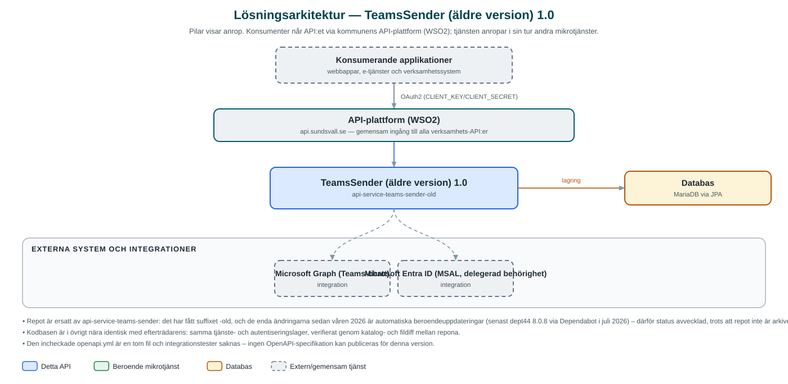

TeamsSender (äldre version)
Äldre variant av TeamsSender – tjänsten som skickar chattmeddelanden i Microsoft Teams – ersatt av det nyare repot api-service-teams-sender.
Om API:et
Det här är den ursprungliga kodbasen för TeamsSender, tjänsten som skickar en-till-en-chattmeddelanden i Microsoft Teams via Microsoft Graph. Repot skapades i juni 2025, döptes om med suffixet -old när utvecklingen flyttade till ett nytt repo (api-service-teams-sender, skapat i maj 2026) och underhålls sedan dess enbart genom automatiska beroendeuppdateringar.
Funktionellt är kodbasen nästan identisk med efterträdaren: samma resurser för att skicka Teams-meddelanden och för inloggning av avsändarkontot mot Microsoft Entra ID (authorization code-flöde via MSAL), och samma tokencache i databas. Det nyare repot har därutöver bland annat en mock-profil för test och en komplett datasource-konfiguration.
Ny funktionalitet ska sökas i efterträdaren – denna post finns med för spårbarhet eftersom repot fortfarande är publikt.
Det här gör API:et
- Skicka Teams-meddelande – Skapar en en-till-en-chatt mellan avsändarkontot och mottagaren via Microsoft Graph och postar meddelandet.
- Inloggning av avsändarkonto – Inloggnings- och callback-resurser för att ge tjänsten delegerade tokens mot Microsoft Entra ID.
- Tokencache i databas – MSAL-tokens lagras via JPA och förnyas tyst vid utskick.
- Konfiguration per kommun – Entra ID-uppgifter konfigureras per municipalityId.
API-dokumentation
Ingen incheckad OpenAPI-specifikation hittades i källkodsförrådet; se källkoden för aktuell API-dokumentation.
Teknisk dokumentation
Nedan beskrivs hur tjänsten är uppbyggd, vilka andra tjänster den anropar och vad som krävs för att driftsätta den. Informationen är härledd ur källkoden och dess konfiguration på GitHub.
Arkitektur

API:et är en mikrotjänst (Java 25, Spring Boot via kommunens gemensamma tjänsteplattform dept44 (8.0.8), byggd med Maven). Konsumenter når tjänsten via kommunens gemensamma API-plattform (WSO2) på api.sundsvall.se – tjänsten anropas aldrig direkt. Lagring: MariaDB via JPA; används som tokencache för MSAL-inloggningen (inga Flyway-migrationer, anslutningen är inte förkonfigurerad i application.yml). Övriga integrationer som förekommer i koden: Microsoft Graph (Teams-chatt), Microsoft Entra ID (MSAL, delegerad behörighet).
Teknikstack
- Språk: Java 25
- Ramverk: Spring Boot via kommunens gemensamma tjänsteplattform dept44 (8.0.8), byggd med Maven
- Databas: MariaDB via JPA; används som tokencache för MSAL-inloggningen (inga Flyway-migrationer, anslutningen är inte förkonfigurerad i application.yml)
- Övrigt: Microsoft Graph SDK (inklusive beta-API), MSAL4J för Entra ID-inloggning, Resilience4j circuit breaker runt tokencachen
Beroenden till andra mikrotjänster
Inga anrop till andra mikrotjänster hittades i källkodens konfiguration.
Konfiguration och driftsättning
- Entra ID-konfiguration per kommun under azure.ad.<municipalityId>
- Databasanslutning för tokencachen
- Anrop görs per kommun – municipalityId ingår i API-vägen
Noterbart ur källkoden
- Repot är ersatt av api-service-teams-sender: det har fått suffixet -old, och de enda ändringarna sedan våren 2026 är automatiska beroendeuppdateringar (senast dept44 8.0.8 via Dependabot i juli 2026) – därför status avvecklad, trots att repot inte är arkiverat på GitHub.
- Kodbasen är i övrigt nära identisk med efterträdarens: samma tjänste- och autentiseringslager, verifierat genom katalog- och fildiff mellan repona.
- Den incheckade openapi.yml är en tom fil och integrationstester saknas – ingen OpenAPI-specifikation kan publiceras för denna version.
Källkod
Källkoden är öppen och finns hos Sundsvalls kommun på GitHub. I källkodsförrådet finns även instruktioner för att klona, konfigurera och starta tjänsten i egen miljö.